Certain kinds of ideas consume Light Slots: the usual three are Secrets, Ruses, and Stress. The example character has one of each, plus something less common.
Click them to learn more.
INVENTORIES
The core of a Veracity character is their two slot-based inventories (Light + Flesh).
You can have at most 18 Light & 18 Flesh slots.
Characters start with 4 Flesh slots, 4 Light slots, and 4 slots to assign freely.
Slots are unlocked from lowest to highest, but filled from highest to lowest, so that the empty slots are always continuous at the low numbers.
You can rearrange items in slots freely, at any time. If your capacity is reduced i.e. an item is forcibly added or a slot is removed, you can choose the item that is removed.
SECRETS
When your character hears something that sounds secret, you may add it as a Secret (with an appropriate description).
Chose not to? your character didn't believe it, or considered it unimportant.
Secrets must be the truth, and characters must have reasonable grounds to believe them.
If something is known to be false, even metatextually, it can't be a Secret.
Revealing Secrets advances TRUTH.
When you shock at least one NPC by revealing a Secret, you level up: gain a Slot (Light or Flesh, your choice).
An NPC that is both shocked and convinced is likely to become permanent ally or retainer.
Secrets are weapons against tricksters: revealing their Secrets inflicts Stress on them, and turns NEUTRAL NPCs against them.
RUSES
Don't get any ideas
A Ruse represents a deliberate untruth that you're maintaining.
Add it to a Light slot when you start to maintain the Lie, remove it when you stop.
No slots? Tough luck.
STRESS
You gain Stress for acting against a Facet, or violating social Convention. Enemies and hostile environments may also inflict Stress.
Remove one Stress each time you spend a full day relaxing in daylight.
If all of your Light Slots contain Stress, you Break: the first time, you lose the ability to Level Up.
Each additional time, you gain d20 Wounds.
After Breaking, remove all Stress.
OTHER ITEMS
All sorts of items enter into Light Slots.
You might receive an idea as loot: from a conversation or book.
Or suffer a harmful idea as a result of an attack from a foe.
The example character is working on learning the Orcish tongue.
The Referee has decided that it will require them to achieve a set of goals, and will fill a Light Slot until they're finished.
The Referee is responsible for which ideas should be represented by items.
FLESH SLOTS
Certain kinds of physical objects consume Flesh slots: the usual three are Evidence, Means, and Wounds. The example character has some of each.
Click them to learn more.
Other inconsequential things consume no slots: they should be bundled together as one Item, or handwaved.
INVENTORIES
The core of a Veracity character is their two slot-based inventories (Light + Flesh).
You can have at most 18 Light & 18 Flesh slots.
Characters start with 4 Flesh slots, 4 Light slots, and 4 slots to assign freely.
Slots are unlocked from lowest to highest, but filled from highest to lowest, so that the empty slots are always continuous at the low numbers.
You can rearrange items in slots freely, at any time. If your capacity is reduced i.e. an item is forcibly added or a slot is removed, you can choose the item that is removed.
BESPOKE ITEMS
FACETS
A Facet is a short phrase that describes your character's behaviour, it has an associated die size ∈ {d4, d6, d8 d10, d12}, corresponding to its intensity.
Facets can be strengthened or weakened, gained or replaced. The Referee is responsible for determining how and when, though it should be infrequent.
POET
EVASIVE
CRUEL
BUTCHER
BAKER
CANDLESTICK-MAKER
VIOLENT
PERMA-SERIOUS
ALCOHOLIC
ANARCHIST
NEVER SAY SORRY
GAMBLER
DUMB LUCK
LIBERTARIAN
WHIMSY
CAFFEINE ELEMENTAL
GOD FEARING
SUPER HATER
WHEN YOU SAVE
If a Save relates to one of your Facets, roll its die. The difficulty is reduced by the total.
"When all you have is a hammer-"
WHEN YOU RESIST
Roll the die, gain that much Stress.
OTHER FEATURES
Miscellaneous abilities are described in natural language under Other Features.
The Referee should distribute Features for diagetic achievements;
this example character has gained a to-hit bonus for defeating two powerful monsters.
HOW TO SAVE
When you attempt to do something for which the outcome is uncertain, the referee may call for a Save.
Roll a d20, lower is better. The rules & referee may add a modifier to represent the difficulty of tasks.
Calculate the total after modifiers: On a 0 or lower, you succeed. On an 19+ you fail. Otherwise, look at the corresponding slot:
If it takes mental effort, look at your Light.
If it takes physical effort, look at your Flesh.
If the slot is empty, you succeed. Otherwise, you fail.
EVIDENCE
The example character found this letter, and they're currently racing back home to expose their commander's treachery.
Anything carried for the purpose of exposing DECEIT
is considered Evidence. Evidence always consumes a Flesh Slot.
WOUNDS
The example character was injured in battle, and this is represented by a Wound.
Remove one Wound each time you spend a full day resting in a safe area with access to medical treatment.
Wounds are gained when your character is harmed. If all of your Flesh Slots contain Wounds, you die.
For more info, see Hurting People.
MEANS
The example character found some treasure!
Wealth is measured in Days Room And Board (R&B).
Amounts smaller than that are handwaved.
Any item worth more than a day's R&B is considered Means:
Means always consume a Flesh Slot.
TOOLS
The example character has some armor, granting them HP. Armor is a Tool.
Any tool that is rare and unusual, or larger than a dagger, is considered a Tool:
Tools always consume a Flesh Slot.
HP provides a buffer against Wounds.
For more info, see Hurting People.
TOOLS
The example character also has a weapon. Weapons are tools.
Any tool that is rare and unusual, or larger than a dagger, is considered a Tool:
Tools always consume a Flesh Slot.
Weapons can be used to hurt people.
For more info about hurting people, see Hurting People.
VERACITY
TELL THE TRUTH
In Veracity you play as an agent of TRUTH.
Each time you shock an NPC by exposing an agent of DECEIT, you Level Up.
You can only expose any given scheme once, and each revelation must be more shocking than the last.
CHARACTER SHEET
Learn about Veracity by exploring the interactive character sheet below, click on a section for more info.
NAME
Glubb Blitto
HP
4/4
FACETS
Observant (d6)
Blacksmith (d8)
———
———
OTHER FEATURES
Defeated Black Knight ×2 Foes dodge your attacks at +2 Dif.
Grand Master Blackmsith Can craft Legendary items.
Undercrawl Veteran Always succeed Saves to avoid intoxication.
LIGHT
———
———
———
———
Secretour commander is plotting to defect to the orcs
RuseI'm pretending to be human so I can fight in the war
Stresswatched my friend Marcus die in battle
Learning Orcish2/4 progress
unrealised potential
unrealised potential
unrealised potential
unrealised potential
unrealised potential
unrealised potential
unrealised potential
unrealised potential
unrealised potential
unrealised potential
SAVE
1
2
3
4
5
6
7
8
9
10
11
12
13
14
15
16
17
18
19
20
FLESH
Means: treasure, large or unusual tools
———
———
———
———
Commander's Notesigned by him, pledges allegiance to the orc lord
Gold Ringworth 100 days room & board
Woundstruck by an orcish arrow
Helmet+4 HP
Swordd6
unrealised potential
unrealised potential
unrealised potential
unrealised potential
unrealised potential
unrealised potential
unrealised potential
unrealised potential
unrealised potential
PEACE

CONVENTION
During social situations, the referee declares any relevant aspects of social Convention. Characters that violate a Convention gain Stress.
The Conventions should be displayed in a way that makes them clear to the whole table, and can be modified at any time. i.e. the situation changes, the referee realizes they made an error.
If, upon a player declaring an action, the referee realizes that it would violate a previously unspoken Convention. That Convention is added to the list, and the player may cancel the action so it does not occur.
Examples of Convention
Never Swear at this Posh Dinner (+1)
Never Question The Gods (+d4)
Always Wear Clothes (+d6, 1/scene)
Don't Cross the Rubicon (+d12)
INFLUENCING PEOPLE
NPCs suffer Stress just like player characters, and it's possible to inflict it
on them without going to blows.
Characters at risk of critical Stress will almost always back down.
Common Social Attacks
Trapped By Convention
Effective Threat or Insult
Flee Argument Without Mutual Agreement (+1 Stress)
Death of Friend or Family (+d6 Stress)
Shocked by Reveal of Secret (+d6 Stress)
Own Secret Revealed (+max Stress)
WAR
INITIATIVE & SURPRISE
The leader of the player party makes a Light Save. On a success, the players act first. Otherwise, the enemy does.
Characters that are surprised by the start of conflict lose all HP, and skip their first turn.
ON YOUR TURN
You can move up to 20-ft, and spend AP. You start each turn with AP equal to your Flesh. The Referee decides the cost of actions, most cost 4 AP i.e. closing a door, making an attack.
HURTING PEOPLE
The target of an attack is always the one to Save.
Characters start with 0 HP, it is granted by armor and magical items. All HP is regained at the end of each scene.
Damage first reduces HP, then inflicts Wounds. HP is bypassed if the target is immobilised or surprised.
Characters start 2 Facets (d6), 4 Flesh slots, 4 Light slots, and 4 slots to assign freely.